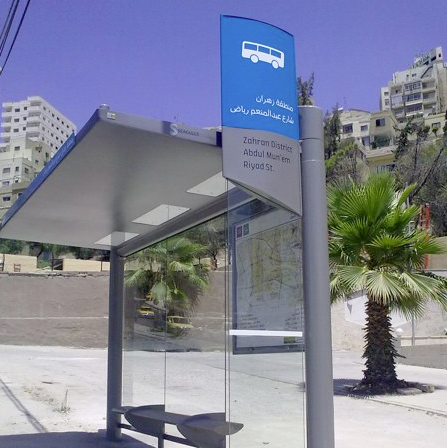
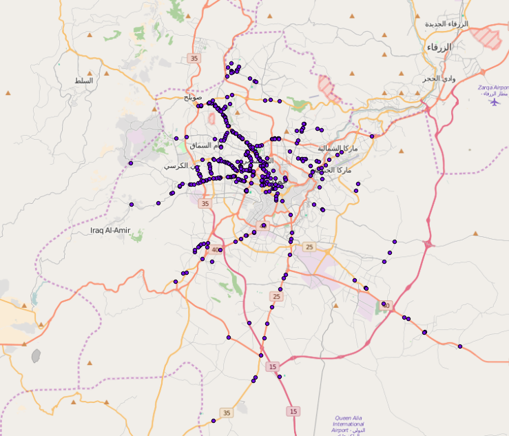
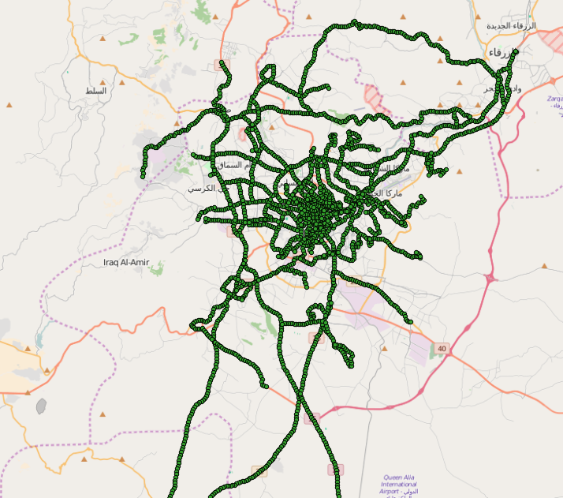
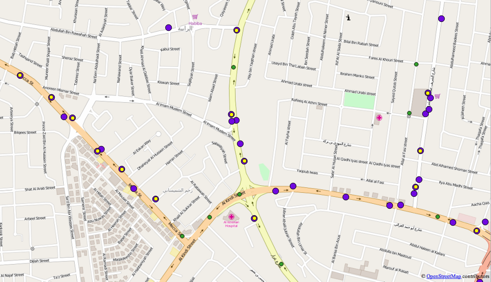

While there aren’t fixed bus stops in Amman—you can get on or off a bus anywhere—the Greater Amman Municipality (GAM) has installed a variety of benches and bus shelters over the years, like this one:
Our group thought it’d be great if we could incorporate the locations of the bus shelters in the trip-planner app we’re developing. Given how unpredictable buses can be, it’d be great if people using our app were steered towards the nearest bench so they could sit as they wait for the bus.
The Amman municipality gave us a GIS dataset with the locations of all of the benches in Amman.
One of the larger goals of the project is to promote a spirit of open civic data. When it comes to sharing data, there certainly isn’t a consenus within the Greater Amman Municipality. Some departments and people embrace the idea that a city and its government gain value by sharing information on the city. Gathering dusts on shelves and in harddrives, data has little use. Put out into the public, civic-minded groups and businesses can put it to use. This is of course what our group believes. Other departments in the municipality hold the view that data should generate revenue and that once the government gives it away for free they can’t get it back.
The tension between these different views results in some odd witholdings. The government gave us a dataset of all the street names in Amman, but wouldn’t give us the houses numbers for the buildings on those streets. They gave us neighborhood names and boundaries, but wouldn’t share their dataset of landmarks which would help in navigating those neighborhoods. And when we asked for elevation data, the response was a polite: “No way”. Luckily, there are other sources of elevation data so our trip planner won’t send you hiking up big hills unnecessarily.
It’s frustrating to know that there’s data locked away which could be incredibly helpful. But it’s also a challenge that makes sense in some ways. Since our group believes in the value of open data, it’s encumbent on us to put our money where our mouths are and prove the case. The bus shelters are a particularly good demonstration ground.
The international standard for organizing transit data is the General Transit Feed System which uses the stop-locations as the backbone of how it represents transit. Since there are no fixed stops in Amman, we’ve had to simulate “stops” every 200 meters to represent a bus’s route. Here are our simulated stops which you can see track the contours of the roads the buses travel along:
Using the data GAM, I wrote script in Python to check to see if there’s a bus shelter nearby one of our simulated stops. If there is, I’ve moved our stop to coincide with the GAM bus shelter.
There are a few real but managable wrinkles with this approach. First of all, GTFS uses stops in conjunction with fixed time schedules to tell people where to go and when to be there. That means that when we move the stops but don’t update the times, the schedule will be slightly off. In our case, our timing data is so imprecise anyways, that shifting stops by a few dozen meters doesn’t really register. The larger issue is that by programmatically moving stops in this way, I may have pulled a stop that was supposed to be on one road onto a neighborhing road where the bus doesn’t run (if it’s pulled along the same path as the bus, that’s fine). To hedge against this, I kept the radius for moving stops at a low threshold of 100 meters. I’ll then manually check the stops that have moved to see if stops have been moved when they shouldn’t have.
GTFS stops have a location_type column which is the GTFS way of designating “stations”. The manual defines a station as “a physical structure or area that contains one or more stops.” Labeling roadside benches as “stations” may be a bit grand, but it does meet their definition of a physical structure. Plus, it’s either that or use the wheelchair_boarding column, which would certainly be off.
I’m looking forward to seeing how our app developers at Not Another Fruit visually show that there’s a bench nearby where someone can sit. Longer term, I hope this bolsters our case for the value that the government can get in sharing data. Afterall, they went through all the trouble of setting up benches around the city. By simply sharing that data, people will find it easier to use the benches. Even if it doesn’t shake the municipality from their closed-data ways, if even a few people have a more pleasant transit experience by being able to rest as the bus comes, then it’s certainly been worth our time.